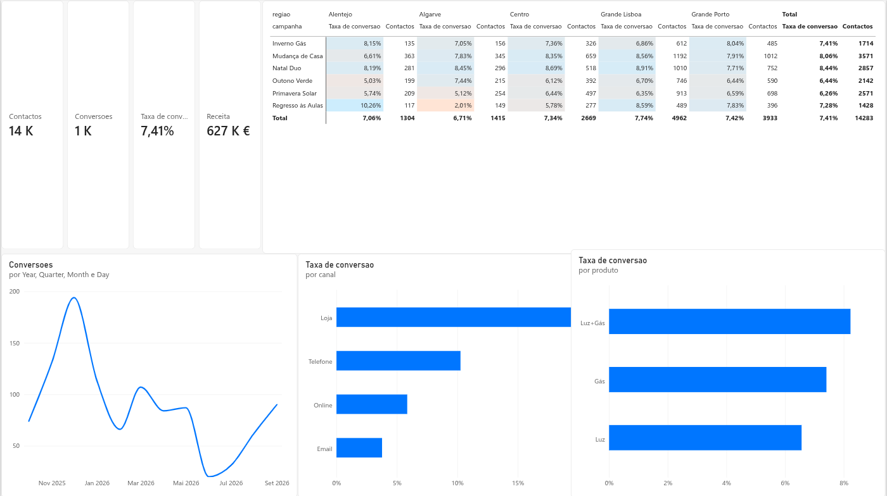

Campaign performance dashboard
An energy retailer runs six campaigns a year across email, phone, shops and online. Which ones actually bring customers, where, and through which channel? A Power BI report built from scratch to answer it.
Try it: click a channel, a product, a month or a cell, and every other visual filters, as in Power BI. This is a web replica of the report, built in JavaScript on the same data and the same measures, because the original lives in Power BI and cannot be embedded publicly. Synthetic data, generated for the exercise.

The original report in Power BI. The .pbix above opens it with the model and every measure.
What it shows
Four numbers, then the why.
- Contacts, conversions, conversion rate and revenue at the top.
- Conversions by month, on a calendar table so the months run in order across two years.
- Conversion rate by channel and by product, sorted so the answer is the first bar.
- Campaign by region, with the rate coloured and the number of contacts next to it.
Findings
What the numbers say, and what they don't.
- Electricity and gas together convert best: 8.2%, against 7.4% for gas and 6.6% for electricity alone, and they bring about two thirds of the revenue.
- Shops convert best, phone brings the most customers. Shops convert 19.6% of contacts, phone brings the most conversions (370), and email, with the most contacts, converts only 3.8%. The highest rate and the most conversions are not the same channel, which is why the report shows both.
- The best cell is not a conclusion. The top campaign-region rate (10.3%) comes from only 117 contacts; a few conversions either way would put it back at the average.
- The rate is never an average of rates. The measure divides total conversions by total contacts, so a total or a product group is always weighted by volume, never a simple average of the rows above it.
Data model
One fact table, four dimensions.
| Table | One row per | Key |
|---|---|---|
| fact_contactos | contact: date, campaign, channel, region, converted, revenue | id_contacto |
| dim_campanha | campaign, with product, dates and budget | id_campanha |
| dim_canal | channel | id_canal |
| dim_regiao | region, with its zone | id_regiao |
| dim_data | day (marked as the date table) | data |
All relationships are many-to-one, filtering one way from each dimension to the fact table.
Measures
Contactos = COUNTROWS ( fact_contactos ) Conversoes = SUM ( fact_contactos[convertido] ) Taxa de conversao = DIVIDE ( [Conversoes], [Contactos] ) Receita = SUM ( fact_contactos[receita_anual_eur] ) Receita por conversao = DIVIDE ( [Receita], [Conversoes] ) Conversoes mes anterior = CALCULATE ( [Conversoes], DATEADD ( dim_data[data], -1, MONTH ) ) Variacao mensal % = DIVIDE ( [Conversoes] - [Conversoes mes anterior], [Conversoes mes anterior] ) Conversoes acumuladas = TOTALYTD ( [Conversoes], dim_data[data] ) Conversoes Lisboa = CALCULATE ( [Conversoes], dim_regiao[regiao] = "Grande Lisboa" ) % das conversoes = DIVIDE ( [Conversoes], CALCULATE ( [Conversoes], ALL ( dim_canal ) ) )
How it is built
Built in the Power BI service. In Power Query, the dates arrived from Excel as serial numbers and were converted to the Date type before anything else; then the star schema, the measures and one report page. Two details I learnt on the way: the automatic month level of a date hierarchy merges the same month of different years, so the time axis uses the calendar table; and identifier columns are set not to summarise, so nothing adds up IDs by accident.
The interactive version on this page is a JavaScript replica: the same data aggregated by month, campaign, channel and region, the same measures, and the same cross-filtering between visuals. Its totals match the Power BI report to the unit.
- Power BI
- Power Query
- DAX
- Star schema
- Time intelligence